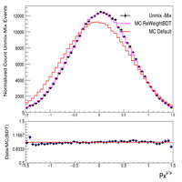

Projects

Data Unfolding using Bayesian Iterative Method
I used the Bayesian Iterative Data Unfolding method to address issues related to detector acceptance and bin migration. Systematic studies and biases have been done, including how to handle the unfolding regularization.
View Details

Reweighting MC distributions using Gradient Boosted Reweighter
A demonstration of reweighting is shown using Gradient Boosted Reweighter. All Monte Carlo (MC) distributions are scaled to the total counts of the Data (= Unmixed-Mixed) events.